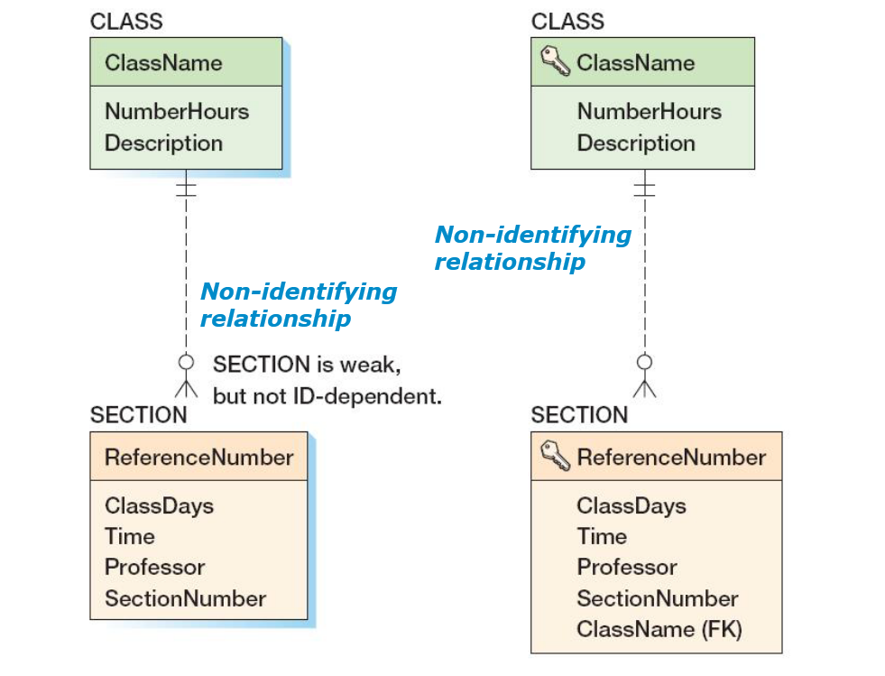
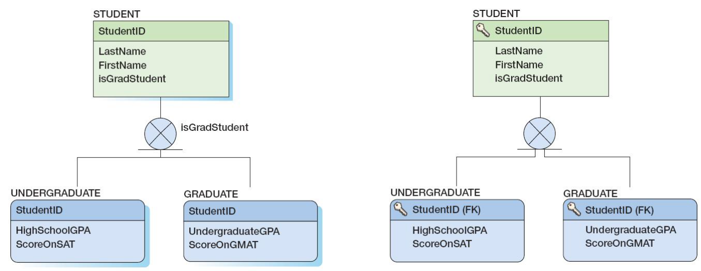

Databases
From data model to database
Steps to take
Steps to take
Step 1 - Creating a relation for each entity
Step a - Create table for each entity
- Use the same name of the entity for the table.
- Pick the primary key (identity of entity)
- Designated using a key symbol.
- The ideal primary key is short, numeric, and fixed.
- Surrogate keys meet the ideal, but have no meaning to users.
Step b - Specify Candidate Keys
- The terms candidate key and alternate key are synonymous.
- Candidate keys are unique determinants of a relation.
- Some use AKn.m notation, where n is the number of the alternate key, and m is the column number in that alternate key.
Step c - Specify Column Properties: Null Status
- Null status indicates whether or not the value of the column can be NULL.
- An alternate key can have a null status of NULL.
- If a value is however specified, then it must be unique !
Step c - Specify Column Properties: Data Types
- Generic data types:
- CHAR(n) and VARCHAR(n)
- DATE, TIME and DATETIME
- MONEY
- INTEGER
- DECIMAL
Reference - Sql Server 2008 Data Types
Reference - MySQL 5.1 Data Types
Reference - MySQL 5.1 Data Types
Reference - MySQL 5.1 Data Types
Step d - Specify Column Properties: Default Value
- A default value is the value supplied by the DBMS when a new row is created and the attribute is not specified by the user.
- The most common default value is NULL.
- Other common default values are
- A specified string (ex. "New Employee")
- The current date or time
- The result of triggers
- Default value is determined by some logic or is calculated based on other values.
- We see database triggers later.
Step d - Specify Column Properties: Default Value
- Default values can be documented as followed.
Step d - Specify Column Properties: Data Constraints
- Data constraints are limitations on data values:
- Domain constraint: column values must be in a given set of specific values.
- Examples:
- Gender: Male or Female
- Employee contract: part-time, full time, ...
- Examples:
- Range constraint: column values must be within a given range of values.
- Examples:
- Birthdate: between 1920 and NOW()
- Examples:
- Domain constraint: column values must be in a given set of specific values.
Step d - Specify Column Properties: Data Constraints
- Data constraints are limitations on data values:
- Intrarelation constraint: column values are limited by comparison to values in other columns in the same table.
- Examples:
- Date of contract renewal > date of current contract
- Examples:
- Interrelation constraint: column values are limited by comparison to values in other columns in other tables.
- Examples:
- Referential integrity constraints on foreign keys.
- Examples:
- Intrarelation constraint: column values are limited by comparison to values in other columns in the same table.
Step d - Specify Column Properties: Verify normalization
- The tables should be normalized based on the data model.
- Verify that all tables are:
- BCNF
- 4NF
- We see this later
Step 2 – Creating associations (relationships)
Step 2 – Creating associations (relationships)
- Associations between entities are realized by adding foreign keys (which point to the primary key of the other table in the relationship).
- Start with associations between strong entities.
- Weak entities are entities which cannot exist on their own.
- Weak entities are entities which cannot exist on their own.
Step a – Strong Entity Associations - 1:1
- Place the key of one entity in the other entity as a foreign key.
- Either design will work
- Minimum cardinality considerations may be important.
- O-M will require a different design than M-O.
- One design will be very preferable.
Step a – Strong Entity Associations - 1:1
- Enforcement of maximum cardinality:
- Foreign key is indicated as candidate key to force uniqueness
Step a – Strong Entity Associations - 1:1
- There is no preferred implementation (unless logically selected based on business logic).
- There would have been a preferred implementation however in the case of a M-O or O-M association (see book page 211 – Opmerking).
Step a – Strong Entity Associations - 1:N
- Place the primary key of the table on the one side of the relationship into the table on the many side of the relationship as the foreign key.
- The one side is the parent table and the many side is the child table, so "place the key of the parent in the child."
Step a – Strong Entity Associations - 1:N
- Who else thinks there is something wrong with this example?
Step a – Strong Entity Associations - N:M
- In an N:M strong entity relationship there is no place for the foreign key in either table.
- A COMPANY may supply many PARTs.
- A PART may be supplied by many COMPANYs.
Step a – Strong Entity Associations - N:M
- The solution is to create an intersection relation or association relation that stores data about the corresponding rows from each entity.
- An intersection relation consists only of the primary keys of each relation which form a composite primary key.
- An association relation consists of the primary keys of each relation which form a composite primary key with extra attributes.
- Each relation's primary key becomes a foreign key linking back to that relation.
Step a – Strong Entity Associations - N:M
Step a – Strong Entity Associations - N:M
- Notice the cardinalities
- Weak and ID-dependant => mandatory
- Keep original cardinalities on side of intersection / association relation
Step a – Strong Entity Associations - N:M
Step a – Strong Entity Associations - N:M
Step a – Strong Entity Associations - N:M
- Higher order relationships can be implemented using binary relationships combined with intersection/association relations.
- Associations between multiple entities are possible.
- Each entity is associated with the association relation using a binary association.
Step a – Strong Entity Associations - N:M
Overview of intersection and association relations
- An intersection relation
- Holds the relationships between two strong entities in an N:M relationship
- Contains only the primary keys of the two entities
- As a composite primary key
- As foreign keys
- An association relation
- Has all the characteristics of an intersection relation
- PLUS it has one or more columns of attributes specific to the associations of the other two entities
Step b – Relationships with ID-Dependent Entities
- Three typical uses for ID-Dependent Entities:
- Representing N:M Relationships
- We just discussed this
- The Multivalued Attribute Pattern
- Archetype/Instance Pattern
- Representing N:M Relationships
Step b – The Multivalued Attribute Pattern
- Many entities have attributes that are multivalued.
- One example is a contact person for a company. One company can have multiple contacts. Creating a new row in the company entity for each contact would create a multivalued dependency.
- The solution to this is store the contacts in a separate relation.
Step b – The Multivalued Attribute Pattern
Step b – The Archetype/Instance Pattern
- Many entities have attributes that are multivalued.
- One example is a contact person for a company. One company can have multiple contacts. Creating a new row in the company entity for each contact would create a multivalued dependency.
- The solution to this is store the contacts in a separate relation.
Step b – The Archetype/Instance Pattern
- Used when you have a number of objects (instances) that are bound to some blueprint like model (archetype).
Step b – The Archetype/Instance Pattern
Step b – The Archetype/Instance Pattern

Step c – Subtype Relationships
- Primary keys of the subtypes are the same as of the super type.

Step 3 - Specifying the logic for enforcing the minimum cardinality
Minimum Cardinality
- Relationships can have the following types of minimum cardinality:
- O-O: parent optional and child optional
- M-O: parent mandatory and child optional
- O-M: parent optional and child mandatory
- M-M: parent mandatory and child mandatory
- We will use the term action to mean a minimum cardinality enforcement action.
- No action needs to be taken for O-O relationships.
Cascading Updates and Deletes
- A cascading update occurs when a change to the parent’s primary key is applied to the child’s foreign key.
- Surrogate keys never change and there is no need for cascading updates when using them.
- A cascading delete occurs when associated child rows are deleted along with the deletion of a parent row.
- Strong entities generally do not cascade deletes.
- Weak entities generally do cascade deletes.
Step a – Parent Is Required (M-O)
- A publisher may have published a book.
- A publisher can publish many books.
- A book must be published by a publisher.
- A book can only be published by one publisher.
- Publisher is the parent while books are the children.
Step a – Parent Is Required (M-O)
Step a – Parent Is Required (M-O)
- Implementing actions for M-O associations
- Make sure that:
- Every child has a parent.
- Operations never create orphans.
- The DBMS will enforce the action as long as:
- Referential integrity constraints are properly defined.
- The foreign key column has a null status of 'NOT NULL'.
- Make sure that:
Step a – Parent Is Required (M-O)
- When the child entity is a strong entity cascaded deletion is mostly forbidden.
- Children have to be assigned another parent before the parent can be deleted.
- In case of weak child entities cascaded deletion is a good option.
- When the parent is deleted most of the time the weak child information is useless anyway.
Step b – Child Is Required (O-M)
- A woman must have a pair of shoes.
- A woman may have many shoes.
- A pair of shoes may be owned by a woman.
- A pair of shoes can by owned by one woman.
- The parent is the woman, the shoes are the children.
Step b – Child Is Required (O-M)
- The parent is the woman, the shoes are the children.
- A lot harder to enforce! Need for triggers
Step b – Child Is Required (O-M)
- Implementing actions for O-M associations
- The DBMS does not provide much help.
- Triggers or other application codes will need to be written.
- A trigger is a stored program that is executed by the DBMS whenever a specified event occurs on a specified table or view.
- A trigger is defined based on a table action:
- on delete
- on insert
- on update
Step c – Parent & Child are Required (M-M)
- A database which holds legendary highscores of players.
- A player must have a highscore.
- A player may have many highscores.
- A highscore is owned by a single player.
- Player is the parent, highscores are the children.
Step c – Parent & Child are Required (M-M)
- This is extremely hard to enforce and can only be enforces by specialized triggers.
- Because of dependencies triggers can deadlock each other.
- If possible we place this logic in higher application layers.
Step c – Parent & Child are Required (M-M)
- Implementing actions for M-M associations
- The worst of all possible worlds
- Especially in strong entity relationships.
- All actions must be applied simultaneously.
- Complicated and careful application programming will be needed.
- In relationships between strong and weak entities the problem is often easier when all transactions are initiated from the strong entity side.
- The worst of all possible worlds
Step c – Parent & Child are Required (M-M)
- Implementing actions for M-M (with weak children)
- In relationships between strong and weak entities it is often possible to ignore the action on the children.
Step c – Parent & Child are Required (M-M)
- Implementing actions for M-M (with weak children)
- In relationships between strong and weak entities it is often possible to ignore the action on the children.
Step c – Parent & Child are Required (M-M)
- Implementing actions for M-M (with weak children)
- This is because a phone contact will mostly be added, removed or updated from the company context.
- This will for example be managed by a frontend web application.
- Actions on parents will be required.
- When adding a company we can first create a phone contact with null values.
- Deletion actions are mostly cascaded.
- This is because a phone contact will mostly be added, removed or updated from the company context.

Enforcing Minimum Cardinality
Remember this ?
- 1:1 Strong Entity Relationships
- Preferable implementation?
Remember this ?
- 1:1 Strong Entity Relationships
- And what about now ?
Useful sites and info
Tips
- Child references the parent!
- First of all, the parent is table which is referenced by FK from child. So you can't say that your parent table references the child: it's not correct.
- Secondly, 1:1 relations can be made through:
- Primary Keys in both tables
- Subtypes
- Primary Key in parent and Unique Foreign Key in child
- Primary Keys in both tables